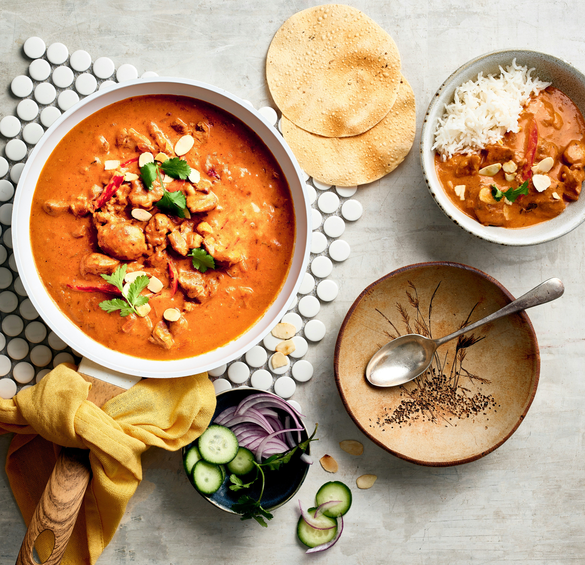

An easy butter chicken recipe I've perfected over the years and shared with many others. The sauce is perfect when creamy and not too thick or too thin. The level of salt and spices can be suited to your taste. Garam and tandoori masala can be found in the ethnic aisle of your grocery store.